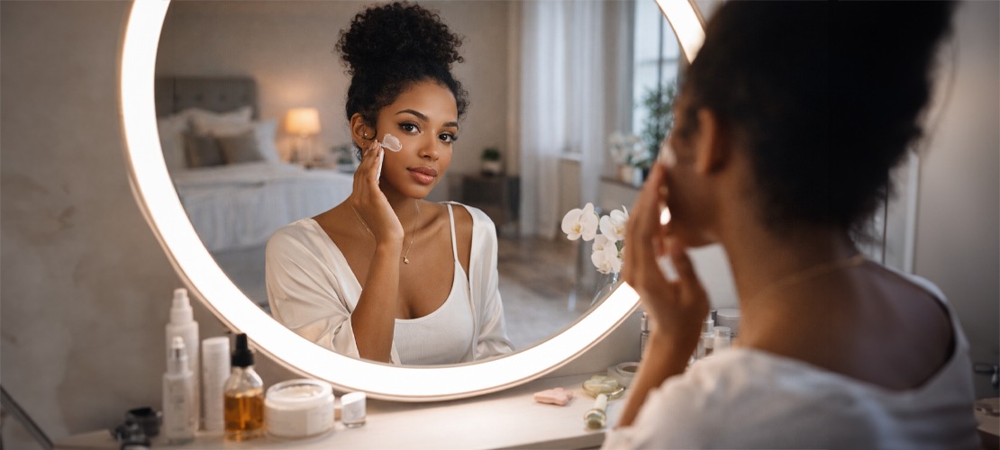

Регулярно очищайте кожу от макияжа и загрязнений, особенно перед сном.
Используйте увлажняющие кремы, а также подходящий уход, чтобы поддерживать кожу увлажнённой и здоровой.
Наносите солнцезащитный крем, чтобы защитить кожу от вредного воздействия UV-лучей.
Мойте волосы в зависимости от их типа и потребностей, важно чтобы волосы были в первую очередь чистыми.
Используйте кондиционеры и маски для волос, чтобы поддерживать их здоровье и блеск.
По необходимости посещайте парикмахера для поддержания формы и здоровья волос.
Используйте качественные косметические продукты, которые подходят для вашего типа кожи.
Учитесь технике нанесения макияжа, чтобы подчеркнуть свои лучшие черты и скрыть недостатки.
Никогда не ложитесь спать с макияжем — это может привести к проблемам с кожей.
Занимайтесь спортом, чтобы поддерживать физическую форму и здоровье. Не обязательно ходить в зал, это может быть небольшая тренировка дома.
Сбалансированное питание помогает поддерживать кожу, волосы и общее здоровье.
Ежедневно используйте лосьон или молочко для тела. Кожа будет выглядеть ухоженной и гладкой.
Опрятный маникюр — не обязательно длинные ногти или яркий лак, но ухоженные кутикулы и чистые ногти.
Обеспечьте себе достаточный и качественный сон, чтобы кожа и организм в целом могли восстанавливаться.
Старайтесь управлять стрессом через медитацию, занятия хобби или другие расслабляющие практики.